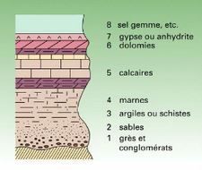
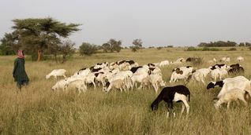

<!DOCTYPE html>
<html>
<head>
	<title>Demo outil carto</title>

	<meta http-equiv="Content-type" content="text/html; charset=utf-8" />
	<link rel="stylesheet" href="https://unpkg.com/leaflet@1.7.1/dist/leaflet.css" />
	<script src="https://unpkg.com/leaflet@1.7.1/dist/leaflet.js"></script>
	<meta name="viewport" content="width=device-width, initial-scale=1.0">

	<style type="text/css">
	
		body {
		padding: 0;
		margin: 0;
		}

		html,
		body,
		#map {
			height: 100%;
		}

		.leaflet-container {
			cursor: default;
		}

	</style>

	<!-- plugin leaflet installés :
		clustering : https://github.com/Leaflet/Leaflet.markercluster
		fullscreen : https://github.com/brunob/leaflet.fullscreen
		MBtiles : https://github.com/0nza1101/leaflet-tilelayer-mbtiles-ts
		AJAX : https://github.com/calvinmetcalf/leaflet-ajax

	-->
	
	<!-- leaflet 1.7.1 -->
	<script src="https://unpkg.com/leaflet@1.7.1/dist/leaflet.js"></script>
	<link rel="stylesheet" href="https://unpkg.com/leaflet@1.7.1/dist/leaflet.css" />
	
	<!-- plugin leaflet clustering  -->
	<link rel="stylesheet" href="./ressources/MarkerCluster.css" />
	<link rel="stylesheet" href="./ressources/MarkerCluster.Default.css" />
	<script type="text/javascript" src="./ressources/leaflet.markercluster-src.js"></script>
	
	<!-- plugin leaflet fullscreen  -->
	<link rel="stylesheet" href="./ressources/Control.FullScreen.css" />
	<script src="./ressources/Control.FullScreen.js"></script>
	
	<!-- plugin leaflet MBTiles  -->
	<script src="https://unpkg.com/sql.js@0.3.2/js/sql.js"></script>
	<script src="./ressources/Leaflet.TileLayer.MBTiles.js"></script>
	
	<!-- for AJAX file loeading -->
	<script src="./ressources/leaflet.ajax.min.js"></script>
	
	
	<!-- Geoijson Tchad -->
	<script src="./ressources/geojsonfiles.js"></script>
	
</head>
<body>

	<div id="map"></div>

	<script type="text/javascript">
		
		
//##################################################################################
//     DEFINITION DE REFERENTIELS CARTO : 'BASEMAPS'
//##################################################################################
		
		const osm = L.tileLayer('https://tile.openstreetmap.org/{z}/{x}/{y}.png', {maxZoom: 19, attribution: '&copy; <a href="http://www.openstreetmap.org/copyright">OpenStreetMap</a>'});
		const otpm = L.tileLayer.wms('http://ows.mundialis.de/services/service?', {layers: 'TOPO-WMS'});
		const cartolight = L.tileLayer('http://{s}.basemaps.cartocdn.com/light_all/{z}/{x}/{y}.png', {maxZoom: 19, attribution: '&copy; carto-db'});
		const positron = L.tileLayer('https://cartodb-basemaps-{s}.global.ssl.fastly.net/light_all/{z}/{x}/{y}.png', {maxZoom: 19, attribution: '&copy; carto-db'});
		const stamenterrain= L.tileLayer('https://stamen-tiles.a.ssl.fastly.net/terrain/{z}/{x}/{y}.jpg', {maxZoom: 19, attribution: '&copy; stamen'});
		const stamenwatercolor= L.tileLayer('https://stamen-tiles.a.ssl.fastly.net/watercolor/{z}/{x}/{y}.jpg', {maxZoom: 19, attribution: '&copy; stamen'});
		
		const ign_ortho = L.tileLayer.wms('https://wxs.ign.fr/ortho/geoportail/r/wms?', {layers: 'ORTHOIMAGERY.ORTHOPHOTOS'});
		
		const hydrogeol = L.tileLayer('https://api.mapbox.com/styles/v1/scedat/cl9ebekdx001y14n6fn5w55wj/tiles/256/{z}/{x}/{y}@2x?access_token=pk.eyJ1Ijoic2NlZGF0IiwiYSI6ImNsOWViYjNsMDFtNWkzcHF0em4yMWcxM3gifQ.prZCwGPuiTbVTkKXOk9Wpg', {attribution: '&copy; <a href="https://unesdoc.unesco.org/ark:/48223/pf0000380688">BGR, BGS, BRGM, EAWAG & UNESCO</a>', maxZoom: 8});
		const ign = L.tileLayer('https://wxs.ign.fr/essentiels/geoportail/wmts?SERVICE=WMTS&REQUEST=GetTile&SERVICE=WMTS&VERSION=1.0.0&TILEMATRIXSET=PM&LAYER=GEOGRAPHICALGRIDSYSTEMS.PLANIGNV2&STYLE=normal&FORMAT=image/png&TILECOL={x}&TILEROW={y}&TILEMATRIX={z}', {maxZoom: 7});
		
					
//##################################################################################
//     INITIALISATION CARTE
//##################################################################################
		
		var map = L.map("map", {
			center: [13, 1], // map centrée sur le Sahel
			tap: false, // ref https://github.com/Leaflet/Leaflet/issues/7255,
			zoom: 5,
			minZoom: 3,
			maxZoom: 18,
			layers: [osm],
			fullscreenControl: true,
			fullscreenControlOptions: { // optional
				title:"Fullscreen",
				titleCancel:"Exit fullscreen"
			}
		});
		
		// detect fullscreen toggling
		map.on('enterFullscreen', function(){
			if(window.console) window.console.log('enterFullscreen');
		});
		map.on('exitFullscreen', function(){
			if(window.console) window.console.log('exitFullscreen');
		});
		
		
		//scale bar
		L.control.scale().addTo(map);
		
//##################################################################################
//     CHARGEMENT DE DONNEES
//##################################################################################		
		
		//---------------------------------------------------------------------------------
		// GeoJSON file using AJAX (plugin)
		//---------------------------------------------------------------------------------		
		
		var rivers = new L.GeoJSON.AJAX("./data/rivers.geojson");
		var mask = new L.GeoJSON.AJAX("./data/pays-PRAPS.geojson");
		
		//var geoJsonDataForages = new L.GeoJSON.AJAX("./data/essais-pompage-tchad.geojson");
		//var geoJsonDataWells  = new L.GeoJSON.AJAX("./data/litho.geojson");
		

		//---------------------------------------------------------------------------------		
			
		var geoJsonDataWells = {
			"type": "FeatureCollection",
			"name": "puits",
			"features": [
				{ "type": "Feature", "properties": { "Name": "1", "description": null},  "geometry": { "type": "Point", "coordinates": [ -16.337643, 16.50232052, 0.0 ] } },
				{ "type": "Feature", "properties": { "Name": "2", "description": null},  "geometry": { "type": "Point", "coordinates": [ -16.09583787, 16.64313932, 0.0 ] } },
				{ "type": "Feature", "properties": { "Name": "3", "description": null},  "geometry": { "type": "Point", "coordinates": [ -15.19485499, 18.04439665, 0.0 ] } },
				{ "type": "Feature", "properties": { "Name": "4", "description": null},  "geometry": { "type": "Point", "coordinates": [ -10.56232602, 16.33443474, 0.0 ] } },
				{ "type": "Feature", "properties": { "Name": "5", "description": null},  "geometry": { "type": "Point", "coordinates": [ -10.93997631, 17.04971429, 0.0 ]} },
				{ "type": "Feature", "properties": { "Name": "6", "description": null},  "geometry": { "type": "Point", "coordinates": [ -10.4710756, 17.35486078, 0.0 ] }},
				{ "type": "Feature", "properties": { "Name": "7", "description": null},  "geometry": { "type": "Point", "coordinates": [ -9.61979514, 16.62901855, 0.0 ] }},
				{ "type": "Feature", "properties": { "Name": "8", "description": null},  "geometry": { "type": "Point", "coordinates": [ -8.17591896, 16.24808901, 0.0 ] }},
				{ "type": "Feature", "properties": { "Name": "9", "description": null},  "geometry": { "type": "Point", "coordinates": [ -11.89355217, 15.85496769, 0.0 ] } },
				{ "type": "Feature", "properties": { "Name": "10", "description": null},  "geometry": { "type": "Point", "coordinates": [ -12.6420682, 16.26256792, 0.0 ] } },
				{ "type": "Feature", "properties": { "Name": "11", "description": null},  "geometry": { "type": "Point", "coordinates": [ -7.35299199, 15.8781684, 0.0 ] } },
				{ "type": "Feature", "properties": { "Name": "12", "description": null},  "geometry": { "type": "Point", "coordinates": [ -10.02759677, 15.88393839, 0.0 ] }},
				{ "type": "Feature", "properties": { "Name": "13", "description": null},  "geometry": { "type": "Point", "coordinates": [ -8.90953778, 16.05639607, 0.0 ] } },
				{ "type": "Feature", "properties": { "Name": "14", "description": null},  "geometry": { "type": "Point", "coordinates": [ -9.43149407, 16.03763075, 0.0 ] } },
				{ "type": "Feature", "properties": { "Name": "15", "description": null},  "geometry": { "type": "Point", "coordinates": [ -10.65096259, 15.5850826, 0.0 ] } },
				{ "type": "Feature", "properties": { "Name": "16", "description": null},  "geometry": { "type": "Point", "coordinates": [ -6.37489993, 15.63973802, 0.0 ] } },
				{ "type": "Feature", "properties": { "Name": "17", "description": null},  "geometry": { "type": "Point", "coordinates": [ -10.32192051, 16.19002982, 0.0 ] } },
				{ "type": "Feature", "properties": { "Name": "18", "description": null},  "geometry": { "type": "Point", "coordinates": [ -14.60282361, 17.48323276, 0.0 ] } },
				{ "type": "Feature", "properties": { "Name": "19", "description": null},  "geometry": { "type": "Point", "coordinates": [ -13.87713066, 16.77995489, 0.0 ] } },
				{ "type": "Feature", "properties": { "Name": "20", "description": null},  "geometry": { "type": "Point", "coordinates": [ -13.63062142, 17.60043341, 0.0 ] } },
				{ "type": "Feature", "properties": { "Name": "21", "description": null},  "geometry": { "type": "Point", "coordinates": [ -13.02390443, 17.05682038, 0.0 ] } },
				{ "type": "Feature", "properties": { "Name": "22", "description": null},  "geometry": { "type": "Point", "coordinates": [ -10.40864089, 16.97530204, 0.0 ] } },
				{ "type": "Feature", "properties": { "Name": "23", "description": null},  "geometry": { "type": "Point", "coordinates": [ -11.13249347, 15.63176309, 0.0 ] } },
				{ "type": "Feature", "properties": { "Name": "24", "description": null},  "geometry": { "type": "Point", "coordinates": [ -10.54519793, 16.12924804, 0.0 ] } },
				{ "type": "Feature", "properties": { "Name": "25", "description": null},  "geometry": { "type": "Point", "coordinates": [ -10.22997811, 16.08220487, 0.0 ] } }				
			]
		};
		

		//---------------------------------------------------------------------------------		
		

		// Définition du layer (cluster) pour afficher les forages tchad
		var forages = L.markerClusterGroup();
		
		var geoJsonLayerForages = L.geoJson(geoJsonDataForages, {
			onEachFeature: function (feature, layer) {
				var popupText = "<b>Type de point d'eau : </b> forage " +
				"<br><b>Nom : </b> " + feature.properties.Identifiant +
				"<br><b>Coordonnées : </b>" + feature.properties.Y_coord + " / " + feature.properties.X_coord +
				"<br><b>Caractéristiques: </b> [...]" +
				"<br><a href='" + feature.properties.url + "' target='_blank'>Fiche essai pompage</a>" +
				"<br><br>"
				;				
				layer.bindPopup(popupText);
				layer.bindTooltip(feature.properties.Identifiant, {closeButton: false, offset: L.point(0, -10)});
			}
		});
		forages.addLayer(geoJsonLayerForages);
				
		// Définition du layer (cluster) pour afficher les coupes litho Tchad
		var litho = L.markerClusterGroup();
		
		var geoJsonLayerLitho = L.geoJson(geoJsonDataLitho, {
				onEachFeature: function (feature, layer) {
				var popupText = "<b>Nom de la fiche litho : </b> ... " +
				"<br><b>Nom : </b> " + feature.properties.Identifiant +
				"<br><b>Coordonnées : </b>" + feature.properties.Y_coord + " / " + feature.properties.X_coord +
				"<br><b>Caractéristiques: </b> [...]" +
				"<br><a href='" + feature.properties.url + "' target='_blank'>Coupe lithologique</a>" +
				"<br><br>"
				;				
				layer.bindPopup(popupText);
				layer.bindTooltip(feature.properties.Identifiant, {closeButton: false, offset: L.point(0, -10)});
			}
		});
		litho.addLayer(geoJsonLayerLitho);		
		
		
		var geoJsonDataUEP = {
			"type": "FeatureCollection", 
			"name": "unités écopastorales",
			"features": [
			{ "type": "Feature", "properties": { "Name": "UEP1", "description": null }, "geometry": { "type": "Polygon", "coordinates": [ [ [ -16.28013819, 16.5206411, 0.0 ], [ -16.256605, 16.52867436, 0.0 ], [ -16.20485161, 16.51466986, 0.0 ], [ -16.17970566, 16.53591182, 0.0 ], [ -16.14060609, 16.55177545, 0.0 ], [ -16.14112507, 16.57249251, 0.0 ], [ -16.12822462, 16.6877658, 0.0 ], [ -16.12634408, 16.6915756, 0.0 ], [ -16.09772077, 16.80917767, 0.0 ], [ -16.16766264, 16.83244651, 0.0 ], [ -16.17564048, 16.83418843, 0.0 ], [ -16.28225921, 16.88517378, 0.0 ], [ -16.33790769, 16.88412291, 0.0 ], [ -16.36366535, 16.81356055, 0.0 ], [ -16.4082538, 16.70674192, 0.0 ], [ -16.45059726, 16.59059284, 0.0 ], [ -16.44760324, 16.48496089, 0.0 ], [ -16.30254162, 16.46927285, 0.0 ], [ -16.28013819, 16.5206411, 0.0 ] ] ] } },
			{ "type": "Feature", "properties": { "Name": "UEP2", "description": null }, "geometry": { "type": "Polygon", "coordinates": [ [ [ -16.28524448, 16.88644249, 0.0 ], [ -16.17847725, 16.835482, 0.0 ], [ -16.09744615, 16.81000021, 0.0 ], [ -16.02752765, 16.75822575, 0.0 ], [ -15.97855749, 16.78278039, 0.0 ], [ -15.96825484, 16.79644519, 0.0 ], [ -15.8326341, 16.89663566, 0.0 ], [ -15.62178829, 17.1055441, 0.0 ], [ -15.60810717, 17.12595441, 0.0 ], [ -15.50338934, 17.34974771, 0.0 ], [ -15.49321595, 17.37010978, 0.0 ], [ -15.52797248, 17.50773207, 0.0 ], [ -15.53880332, 17.51768201, 0.0 ], [ -15.70227192, 17.54211347, 0.0 ], [ -15.70936076, 17.54200151, 0.0 ], [ -15.81400129, 17.46943122, 0.0 ], [ -15.74319548, 17.32225845, 0.0 ], [ -15.73534501, 17.28870406, 0.0 ], [ -15.83724165, 17.25663483, 0.0 ], [ -15.86911909, 17.25607864, 0.0 ], [ -16.00172378, 17.31103658, 0.0 ], [ -16.03022904, 17.31390296, 0.0 ], [ -16.05536618, 17.32357481, 0.0 ], [ -16.14093839, 17.33214368, 0.0 ], [ -16.21392794, 17.13169917, 0.0 ], [ -16.32851101, 16.883207, 0.0 ], [ -16.28524448, 16.88644249, 0.0 ] ] ] } },
			{ "type": "Feature", "properties": { "Name": "UEP3", "description": null }, "geometry": { "type": "Polygon", "coordinates": [ [ [ -13.68518599, 16.13385817, 0.0 ], [ -13.55689704, 16.12583026, 0.0 ], [ -13.4146121, 16.07724839, 0.0 ], [ -13.36327488, 16.27128208, 0.0 ], [ -13.35861828, 16.29382621, 0.0 ], [ -13.38858985, 16.56838159, 0.0 ], [ -13.39340131, 16.57737049, 0.0 ], [ -13.43902771, 16.93781123, 0.0 ], [ -13.44391268, 16.95133407, 0.0 ], [ -13.65484804, 17.05916974, 0.0 ], [ -13.67040003, 16.7249249, 0.0 ], [ -13.67023282, 16.70687516, 0.0 ], [ -13.79504566, 16.19614483, 0.0 ], [ -13.68518599, 16.13385817, 0.0 ] ] ] } },
			{ "type": "Feature", "properties": { "Name": "UEP4", "description": null }, "geometry": { "type": "Polygon", "coordinates": [ [ [ -13.3585876, 16.28481922, 0.0 ], [ -12.69898801, 16.34120444, 0.0 ], [ -12.60587037, 16.71858902, 0.0 ], [ -12.60591228, 16.73655978, 0.0 ], [ -12.59303722, 17.14579346, 0.0 ], [ -12.59310279, 17.16380368, 0.0 ], [ -12.59324095, 17.19983438, 0.0 ], [ -13.114116, 17.2631691, 0.0 ], [ -13.13310336, 17.26316428, 0.0 ], [ -13.46353766, 17.43044682, 0.0 ], [ -13.47308327, 17.43043959, 0.0 ], [ -13.43919701, 16.95585796, 0.0 ], [ -13.3585876, 16.28481922, 0.0 ] ] ] } },
			{ "type": "Feature", "properties": { "Name": "UEP5", "description": null }, "geometry": { "type": "Polygon", "coordinates": [ [ [ -12.41161887, 14.87370586, 0.0 ], [ -12.21834974, 14.70074865, 0.0 ], [ -12.02390975, 14.69315003, 0.0 ], [ -12.02022692, 15.00508553, 0.0 ], [ -12.01959663, 15.06008702, 0.0 ], [ -12.06442284, 15.49012966, 0.0 ], [ -12.0834202, 15.56323883, 0.0 ], [ -12.22865742, 15.89210394, 0.0 ], [ -12.25797925, 15.92863597, 0.0 ], [ -12.41487094, 16.09311445, 0.0 ], [ -12.45425146, 16.09305458, 0.0 ], [ -12.6514062, 15.79921326, 0.0 ], [ -12.67424978, 15.14713843, 0.0 ], [ -12.41161887, 14.87370586, 0.0 ] ] ] } },
			{ "type": "Feature", "properties": { "Name": "UEP6", "description": null }, "geometry": { "type": "Polygon", "coordinates": [ [ [ -11.53087212, 15.55480387, 0.0 ], [ -11.40448973, 15.66407697, 0.0 ], [ -11.20436761, 15.42705894, 0.0 ], [ -10.94040664, 15.10775226, 0.0 ], [ -10.88107049, 15.26243364, 0.0 ], [ -10.77486552, 15.36215143, 0.0 ], [ -10.72596961, 15.45288614, 0.0 ], [ -10.50642768, 15.49716185, 0.0 ], [ -10.24126792, 15.43194244, 0.0 ], [ -9.98643159, 15.37552535, 0.0 ], [ -9.91521797, 15.72822657, 0.0 ], [ -9.98618988, 16.10016964, 0.0 ], [ -10.47075784, 16.12285767, 0.0 ], [ -10.97776089, 16.13549898, 0.0 ], [ -11.46868501, 16.21973217, 0.0 ], [ -11.73106245, 16.01086784, 0.0 ], [ -11.64663108, 15.59126556, 0.0 ], [ -11.53087212, 15.55480387, 0.0 ] ] ] } },
			{ "type": "Feature", "properties": { "Name": "UEP7", "description": null }, "geometry": { "type": "Polygon", "coordinates": [ [ [ -9.39129451, 15.42377459, 0.0 ], [ -9.42673558, 15.55993973, 0.0 ], [ -9.38804328, 15.62278666, 0.0 ], [ -9.3645937, 15.91186276, 0.0 ], [ -9.3360305, 15.92956192, 0.0 ], [ -9.06521305, 16.3503948, 0.0 ], [ -9.05504792, 16.39541532, 0.0 ], [ -9.20721487, 16.9674638, 0.0 ], [ -9.21607096, 17.01286716, 0.0 ], [ -9.43446857, 16.99814571, 0.0 ], [ -9.72093131, 16.86642033, 0.0 ], [ -9.78834691, 16.78582342, 0.0 ], [ -9.8076536, 16.75891186, 0.0 ], [ -9.65443507, 16.11449027, 0.0 ], [ -9.65481505, 16.08735771, 0.0 ], [ -9.62622599, 15.46266892, 0.0 ], [ -9.39129451, 15.42377459, 0.0 ] ] ] } },
			{ "type": "Feature", "properties": { "Name": "UEP8", "description": null }, "geometry": { "type": "Polygon", "coordinates": [ [ [ -8.45016526, 15.52732577, 0.0 ], [ -8.30866478, 15.56992584, 0.0 ], [ -7.85567888, 15.70549206, 0.0 ], [ -7.9448059, 15.91500525, 0.0 ], [ -8.09104983, 16.09849922, 0.0 ], [ -7.77969791, 16.15528882, 0.0 ], [ -7.76091216, 16.15488812, 0.0 ], [ -7.56908928, 16.31320378, 0.0 ], [ -7.55902702, 16.34006677, 0.0 ], [ -7.80524391, 16.67952152, 0.0 ], [ -8.33419286, 16.62686639, 0.0 ], [ -8.50777821, 16.42234795, 0.0 ], [ -8.37451097, 16.02265823, 0.0 ], [ -8.60869193, 15.57521592, 0.0 ], [ -8.45016526, 15.52732577, 0.0 ] ] ] } }
			]
		};

		// Définition du layer (cluster) pour afficher les puits
		var wells = L.markerClusterGroup();
		
		var geoJsonLayerWells = L.geoJson(geoJsonDataWells, {
			onEachFeature: function (feature, layer) {
				var popupText = "<b>Type de point d'eau : </b> puits pastoral " +
				"<br><b>Nom : </b> " + feature.properties.Name +
				"<br><b>Coordonnées : </b>[lat] / [long]" +
				"<br><b>Caractéristiques: </b> [...]" +
				"<br><a href=''>Fiche</a>" +
				"<br><br>"
				;				
				layer.bindPopup(popupText);
				layer.bindTooltip(feature.properties.Name, {closeButton: false, offset: L.point(0, -10)});
			}
		});
		wells.addLayer(geoJsonLayerWells);
		
		// Définition du layer pour afficher les zones pastorales
		
		var UEPStyle = {
			'color': '#2ca25f',
		};
	
		var UEP = new L.GeoJSON(geoJsonDataUEP, {
		  style: UEPStyle,
		  onEachFeature: function (feature, layer) {
			var popupText = 
			"<b>Unité écopastorale : </b> " + feature.properties.Name +
			"<br><b>Caractéristiques: </b> [...]" +
			"<br><a href=''>Fiche</a>" +
			"<br><br>"
			;
			layer.bindPopup(popupText);
			layer.bindTooltip(feature.properties.Name, {closeButton: false, offset: L.point(0, -10)});
				layer.on('mouseover', function () {
			  this.setStyle({
				'fillColor': '#ff0000'
			  });
			});
			layer.on('mouseout', function () {
			  this.setStyle({
				'fillColor': '#2ca25f'
			  });
			});
		  }
		});
				
		// pour afficher le niveau de zoom
		var ZoomViewer = L.Control.extend({
			onAdd() {
				var gauge = L.DomUtil.create('div');
				gauge.style.position = 'top-left';
				gauge.style.width = '80px';
				gauge.style.background = 'rgba(255,255,255,0.5)';
				gauge.style.textAlign = 'left';
				map.on('zoomstart zoom zoomend', (ev) => {
					gauge.innerHTML = `Zoom level: ${map.getZoom()}`;
				});
				return gauge;
			}
		});	
		

		//--------------------------------------------------------------------------------------------------------------------------------------

//##################################################################################
//     AFFICHAGE DONNEES
//##################################################################################

		map.addLayer(wells);
		map.addLayer(UEP);
		map.addLayer(forages);
		map.addLayer(litho);
		//map.addLayer(mask);
		
		var baseMaps = {
			"OpenStreetMap": osm,
			"OpenTopoMap": otpm,
		};

		var overlayMaps = {
		};	
		
		var layerControl = L.control.layers(baseMaps, overlayMaps).addTo(map);
		//L.control.layers(baseMaps, {position:'topleft'}).addTo(map);	//position topleft ne fonctionne pas
		
		//map.fitBounds(wells.getBounds()); // centrer la carte en fonction du layer 'wells'
				
		// ajout des couches d'intérêt dans le sélecteur :
		//layerControl.addBaseLayer(stamenwatercolor, "Stamen Water color");
		layerControl.addBaseLayer(ign_ortho, "satellite");
		layerControl.addBaseLayer(positron, "osm positron");
		layerControl.addBaseLayer(hydrogeol, "carte hydrogeologique Afrique de l'Ouest");

		//mask=L.GeoJSON.coordsToLatLng();
		layerControl.addOverlay(mask, "pays PRAPS");
		
		layerControl.addOverlay(rivers, "cours d'eau");
		
		layerControl.addOverlay(UEP, "Unités écopastorales Mauritanie");
		layerControl.addOverlay(wells, "Puits PRAPS Mauritanie");
		layerControl.addOverlay(forages, "Essais de forages Tchad (Siteau)");
		layerControl.addOverlay(litho, "Lithologie Tchad (Siteau)");

						
		var zoomViewer = (new ZoomViewer()).addTo(map); // ajout de l'indication du niveau de zoom

	</script>
</body>

</html>
